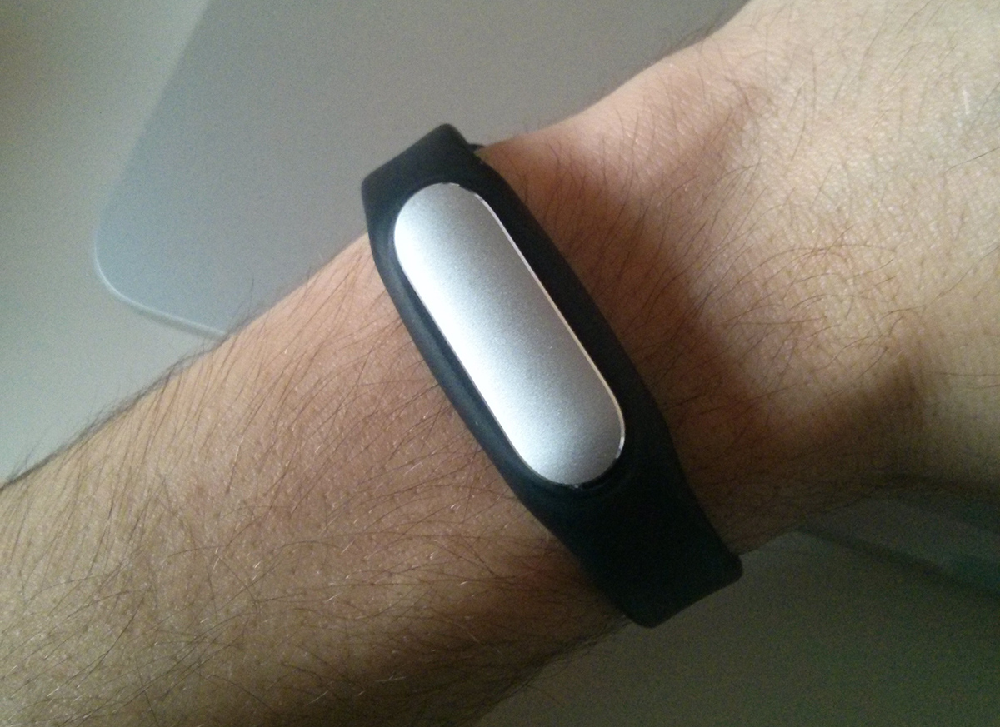
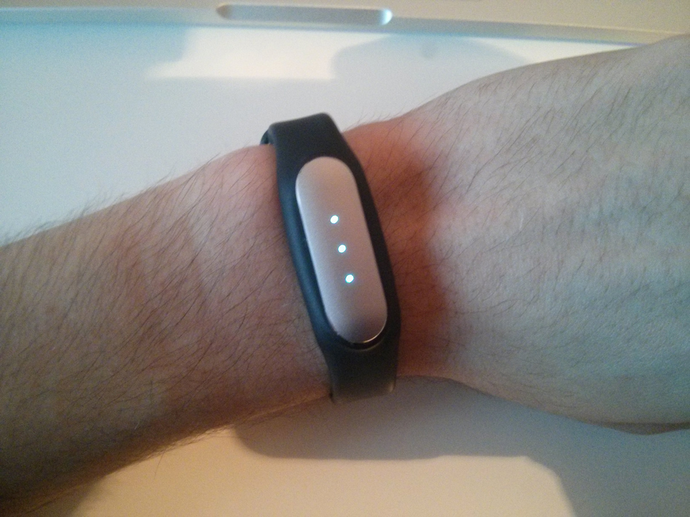
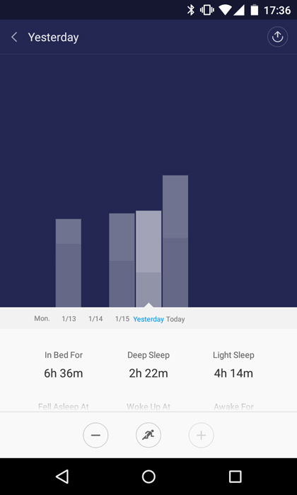

UX y SmartBands

Ante todo decir que este artículo no pretende hacer un análisis de esta pulsera, sino de qué rodea a las smartbands y como han influido en mi día a día
Son ya 5 días con esta pulsera en mi muñeca. Dormir, ducharme, trabajar, salir... tareas diarias que quedan registradas y sincronizadas con la aplicación y sus servidores.
Alejándome de su uso deportivo, cada vez más personas la incorporan a su rutina. El elevado precio de algunas de estas pulseras, la falta de funcionalidad para actividades diarias y muchas veces, el miedo de perder la privacidad, son motivos que llevan a uno a plantearse la compra de dicho gadget.
3 puntos al día!
Contar pasos es una de esas características que traen todas las pulseras del mercado, y el sedentarismo uno de los principales problemas de la sociedad en la que vivimos.
Llegar al trabajo y ponerte delante de una pantalla, moverte en coche/transporte público, sentarte en el sofá a ver la tele o ponerte con el ordenador, ¿te suena?. Cada vez estamos más concienciados de que hacemos poco deporte y la relación de este con nuestra salud.
Contar nuestros pasos es una manera de decirnos a nosotros mismos que nos movemos más de lo que creemos. Para una persona adulta, el deporte es necesario y andar (sin entrar en senderismo...) no es suficiente, pero ver que he andado 8 kilómetros en un día sirve como "placebo" en cuanto a satisfacción personal.
Esto lo saben muy bien en Mi Band y esta te permite establecer tu meta de pasos al día: quiero dar a diario 6000 pasos. En todo momento puedes saber como llevas tu objetivo pues la pulsera tiene tres LEDs en la zona superior y su iluminación indica el porcentaje actual para llegar a tu objetivo.

Las tres luches indican que ya he dado los 6000 pasos que me propuse
En cuanto cumples tu objetivo, la pulsera vibra y se ilumina. ¡Te has propuesto algo y lo has conseguido! ¿Fácil y efectivo verdad?. Ahí llevas tu ración de satisfacción diaria, eres capaz de cumplir tus objetivos.
Dormir, dorm... zzzZZ
Otra de las funcionalidades típicas es la de seguimiento del sueño y alarmas inteligentes. Dormir bien hace que rindamos más y nos encontremos mejor y de buen humor.
Todos sabemos que es difícil mantenter la costumbre de dormir al menos, 8 horas al día. Insomnio, preocupaciones, o simplemente tener que acabar un proyecto o prácticas de universidad hacen que durmamos menos de lo que debiéramos. Cabe decir, que cada uno se conoce a sí mismo y hay quién duerme más y quién menos.
Las alarmas inteligentes son una manera despertarte con el pie derecho (¿o izquierdo si eres zurdo?). Estas alarmas evitan romper ese sueño del que ni un concierto debería despertarte.
No obstante, lo que más me he gustado de este sistema es el ser consciente de que estoy durmiendo menos de lo que debería. Es esa llamada de atención que me dice que estoy durmiendo poco lo que realmente merece la pena de dormir con algo pegado a la muñeca (un poco molesto para mi gusto).

Debo de dormir un poco más...
Privacidad
Es complicado tratar este tema cuando llevas un objeto encima que monitoriza todos tus pasos y normalmente, los exporta a un servidor.
Llegados a este punto debes de decidir si acceder a ello o no. Solo quiero comentar que le otro día conecté mi móvil al ordenador y me puse a echar un vistazo al volcado de Logs de información de Android (en el siguiente apartado veréis por qué hice esto). Me llevé una sorpresa con un mensaje de la aplicación Mi Band a las 12:30 de la noche que decía:
Es muy tarde, acuestate ya!
Es algo que prácticamente nadie verá, pero está ahí y nos ayuda a hacernos una idea de la información que pueden obtener sobre nuestros hábitos.
¿Y el futuro?
Lo primero que se me viene a la cabeza cuando me preguntan qué me parecen las smartbands, es que están muy desaprovechadas. Monitorizar el sueño y los pasos es algo que hacen prácticamente todas, pero por ejemplo, cambiar de canción con una pulsación no. Mi Band es capaz de detectar pulsaciones, ¿por qué no agregar esta funcionalidad?
El freno a este desarrollo viene por dos partes, el precio y el software de propietario. Android liberó hace poco un SDK (Kit de desarrollo de software) que te permite interactuar directamente con estos dispositivos.
En el caso de Mi Band (cuesta unos 20€), el problema viene porque no se ha liberado la API para trabajar con ella. Como consecuencia, solo los desarrolladores de esta pulsera pueden trabajar en nuevas características.
Aunque siempre algo se escapa de sus manos y la ingeniería inversa está ahí. Este es el motivo de que el otro día estuviera con el móvil conectado al PC y leyendo Logs. Si os queréis informar un poco más, aquí tenéis un proyecto que pretende obtener una API para la Mi Band: MiBand Notifier.
La smartband ideal
Por supuesto, la Mi Band no lo es. Al final, una pulsera inteligente no es más que un complemento a tu día a día. Te ayuda a darte cuenta de qué haces a diario, qué deberías de hacer y te facilita distintas tareas.
La idea de llevarla personalmente me gusta, pero pienso que es muy importante tener en mente que nos deben de ayudar, no controlarnos. Este es el límite que nunca debería de pasar ninguna empresa porque a nadie nos gusta que nos digan que nos acostemos o que hagamos más ejercicio.
La pequeña diferencia entre hacer que nos demos cuenta de que es mejor cambiar algo en vez de intentar obligarnos a ello, es lo que al final influye realmente en nuestro comportamiento.